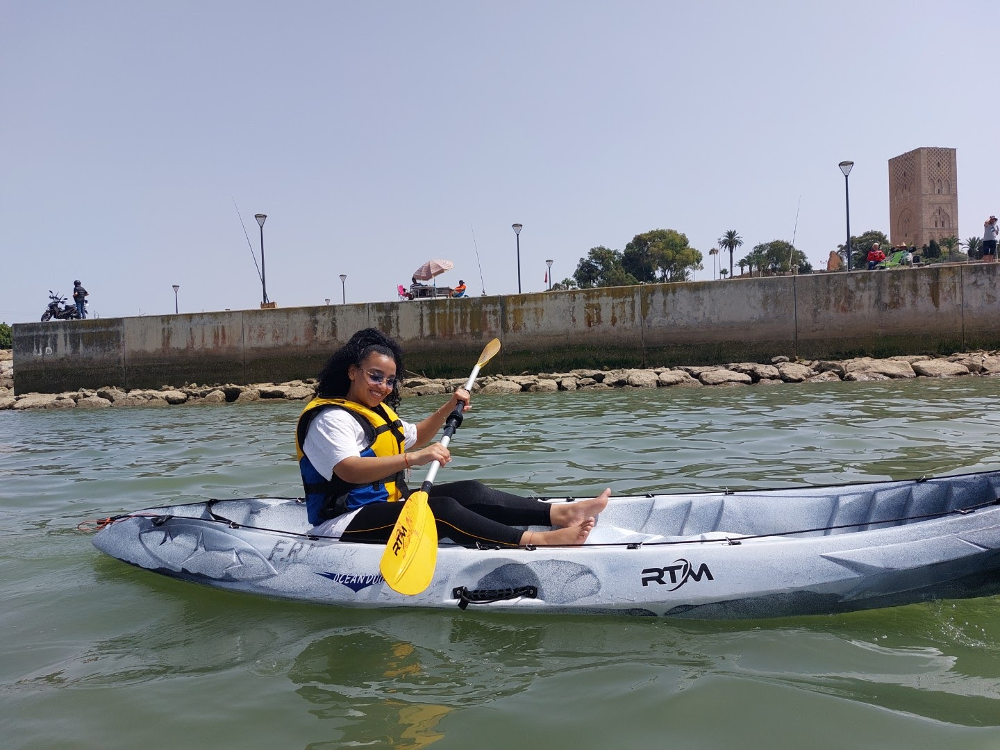
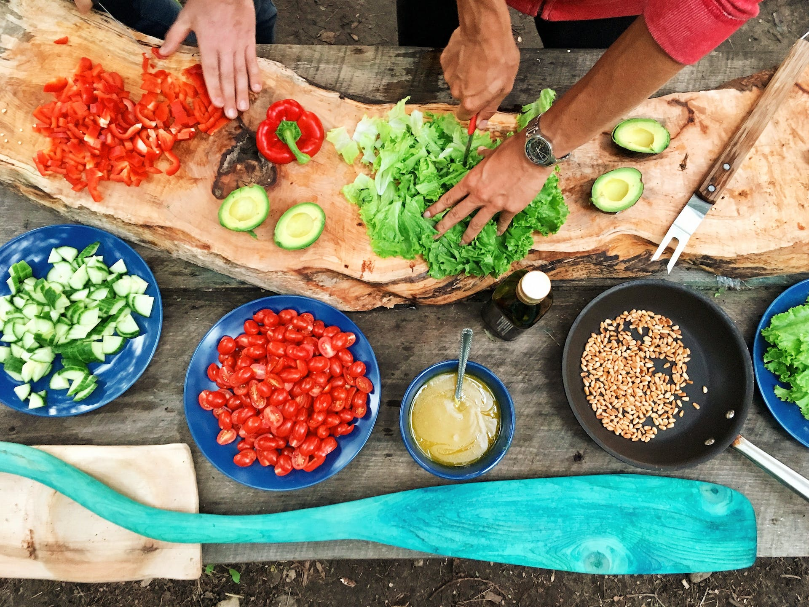
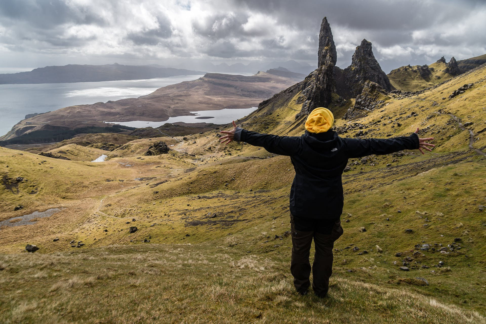

Hello, I'm Aicha Lamrani, and I'm excited to share a more comprehensive view of my life with you. Originally from Morocco, my journey has been a vibrant tapestry woven with diverse experiences and passions.
One of my greatest passions is swimming. The cool embrace of the water, the rhythmic strokes, and the soothing sounds create a sanctuary where I find both peace and strength.
Culinary exploration is another realm I wholeheartedly embrace. Whether experimenting with exotic flavors or crafting beloved traditional dishes, the kitchen is my canvas, and each meal is an expression of creativity and love.
Traveling is my perpetual adventure, a journey of self-discovery through exploration. It's not just about visiting places; it's about immersing myself in different cultures, tasting diverse cuisines, and creating memories that last a lifetime.
My academic pursuits led me to attain a diploma in management, laying the foundation for a versatile skill set. Complementing this, I earned a TEFL (Teaching English as a Foreign Language) certificate, reflecting my commitment to education and cross-cultural understanding.
Dancing is more than a hobby; it's a celebration of life. Through rhythmic movements, I connect with my emotions, express joy, and celebrate the beauty found in every moment.
Having worked in the Ministry of Health, I've contributed to community well-being. Currently, as a dedicated student, I'm passionately involved in my own project, driven by the aspiration to make a positive impact on the world.
Embracing a philosophy of continual growth and self-improvement, my goal is to be the best version of myself. This extends to both personal and professional realms as I navigate the exciting opportunities that the future holds.
As a visual storyteller, I'm thrilled to share more about my journey with you. Below is a video that provides a glimpse into the experiences that have shaped me. Thank you for joining me on this enchanting adventure!
Thank you for visiting my website. Feel free to explore more about me through the provided text, pictures, and videos!
Cherishing the laughter and joy with my amazing friends.
Creating lasting memories with friends who make every moment special.
Exploring new adventures and sharing unforgettable experiences.
Celebrating milestones and supporting each other's dreams.
Grateful for the wonderful friends who light up my life.